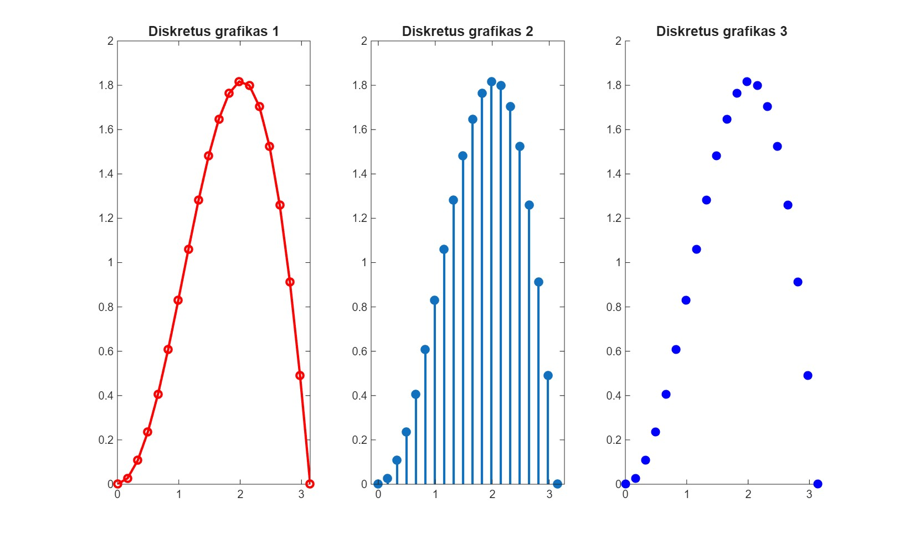
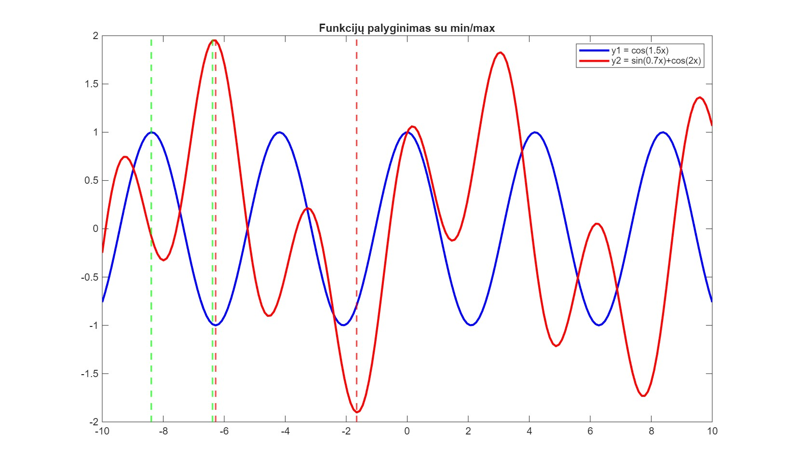
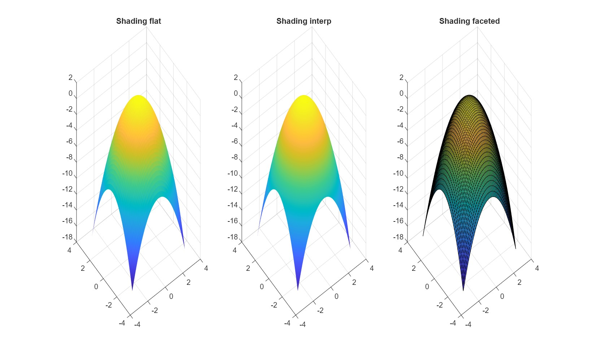

MATLAB Grafikai
Matlab laboratorinių darbų grafinės analizės rezultatai. Diskretiųjų grafikų ir funkcijų tyrimai.
Laboratoriniai darbai
3 skirtingi MATLAB grafikai

Diskretus grafikas
MATLAB Laboratorinis 3
Diskrečiųjų grafikų analizė

Funkcijų palyginimas
MATLAB Laboratorinis 4
Funkcijų min/max reikšmių analizė

Energetikos analizė
Papildomas projektas
Energetikos sistemų modeliavimas